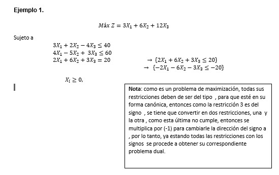
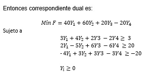
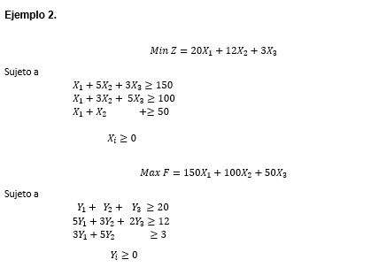

3.1.2 Transformación del problema primal a su problema asociado dual.
Programación lineal asociada a su estructura canónica (maximización).
Primal
Max Z = CX
Sujeto a:
AX ≤ b
X≥ 0
El problema primario, se define la siguiente estructura
Dual
Min f =
Sujeto a:
Denominado problema dual, donde T es la Transpuesta.
Programación lineal asociada a su estructura canónica (minimización)
Primal
Min Z = CX
Sujeto a:
AX ≥ b
X≥ 0
El problema primario, se define la siguiente estructura
Dual
Max f =
Sujeto a:
Dado los siguientes problemas primales, obtener sus correspondientes problemas duales:

Elaboración propia

Elaboración propia

Elaboración propia